Low-cost SPR sensing via optical disc gratings
More than 2 billion people lack access to safe drinking water. Current water monitoring methods require centralized labs and costly equipment, precluding routine monitoring in resource-poor environments. This research presents DiscSPR: a grating-coupled SPR (GC-SPR) platform using commercial BD-R, DVD-R, and CD-R optical discs — which already contain nanoscale grooves — as inexpensive substitutes for traditional plasmonic gratings. Discs were coated with 40–70 nm Ag or Cu by magnetron sputtering, assembled into 3D-printed microfluidic flow cells, and characterized by reflectance wavelength modulation validated against RCWA simulations. Ag-coated BD-R provided the sharpest resonances (321 nm/RIU); CD-R achieved the highest sensitivity (394 nm/RIU). Sensor material cost: under $10 per unit, vs. $50,000–$150,000 for commercial GC-SPR.
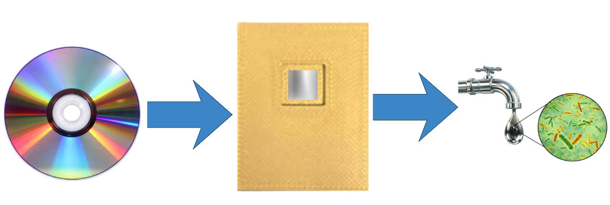
The water monitoring gap
Over 2 billion people lack safe water. Contaminated water causes 485,000 deaths annually from diarrhea alone. The key barrier is not science — it is cost and accessibility of detection tools.
The three main classes of waterborne toxins are: heavy metals (Pb, Hg) causing irreversible organ damage and developmental disorders; pesticides (e.g., atrazine) disrupting hormones and raising cancer risk; and microbial toxins (cyanotoxins, endotoxins) causing acute illness. Contaminated water is colorless and odorless — undetectable without testing.
Modern testing (ICP-MS, HPLC) requires specialized labs costing $20,000–$200,000. This gap defines the engineering challenge DiscSPR addresses.
Why GC-SPR? Why optical discs?
SPR is a gold-standard optical biosensing technique — label-free, real-time, femtomolar sensitivity. The traditional Kretschmann prism setup costs $50,000–$200,000 and is non-portable. Grating-coupled SPR (GC-SPR) replaces the prism with a periodic grating, enabling compact, miniaturizable sensors — but conventional GC-SPR still requires expensive nanofabrication (e-beam lithography, FIB milling).
DiscSPR's insight: commercial optical discs are already mass-manufactured precision nanoscale gratings — at less than one cent per item — with grating periods of 322 nm (BD-R), 805 nm (DVD-R), and 1,582 nm (CD-R). No nanofabrication needed.
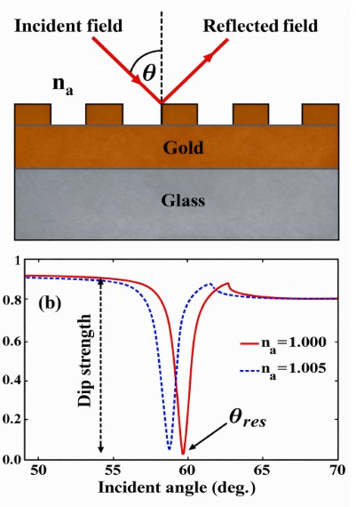
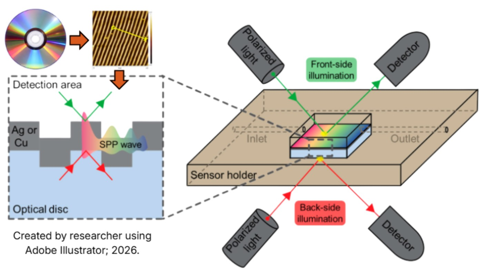
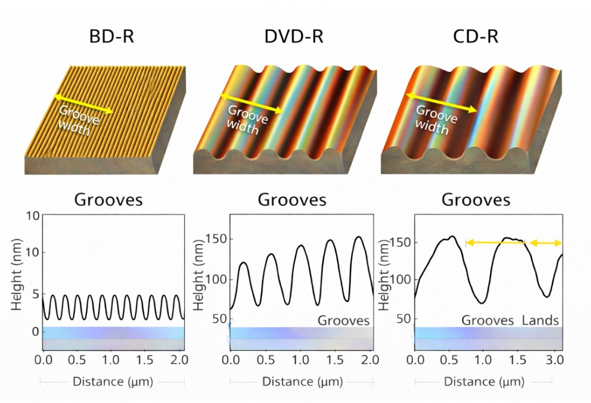
From optical disc to plasmonic sensor
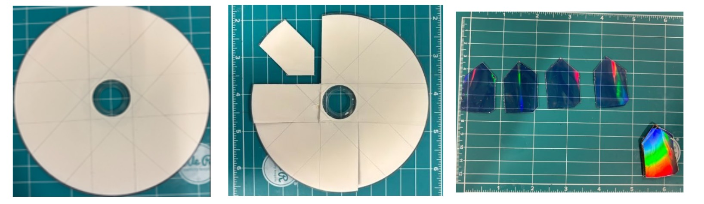
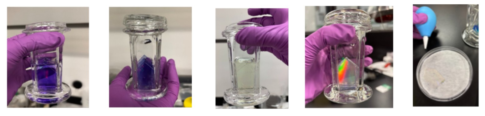
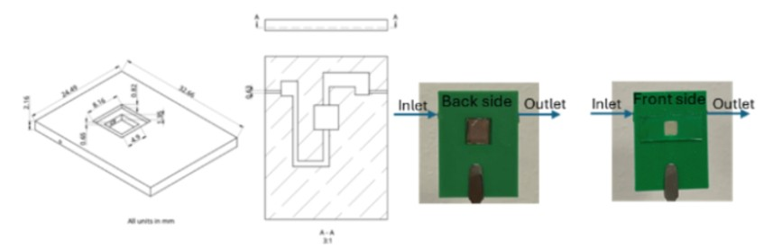
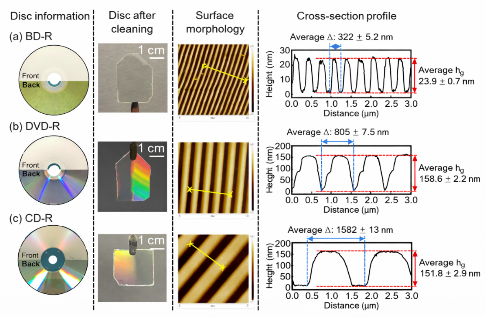
| Disc | Grating period (Λ) | Groove depth (hg) | Metal continuity |
|---|---|---|---|
| BD-R | 322 ± 5.2 nm | 23.9 ± 0.7 nm | Continuous (bridges grooves) |
| DVD-R | 805 ± 7.5 nm | 158.6 ± 2.2 nm | Less continuous |
| CD-R | 1582 ± 13 nm | 151.8 ± 2.9 nm | Less continuous |
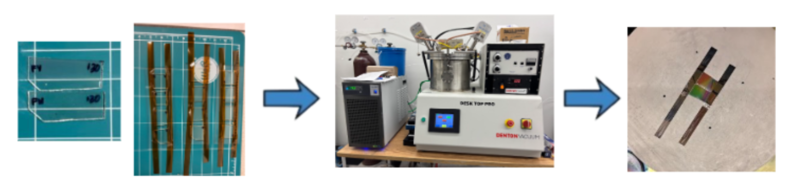

Sensitivity, resonance quality, and disc geometry
| Disc | S (nm/RIU) | R² | Resonance quality | Best trait |
|---|---|---|---|---|
| CD-R | 394 | 0.990 | Broad, overlapping modes | Highest sensitivity |
| BD-R | 321 | 0.933 | Sharp, well-defined | Best resonance quality |
| DVD-R | 290 | 0.998 | Moderate definition | Best linearity |
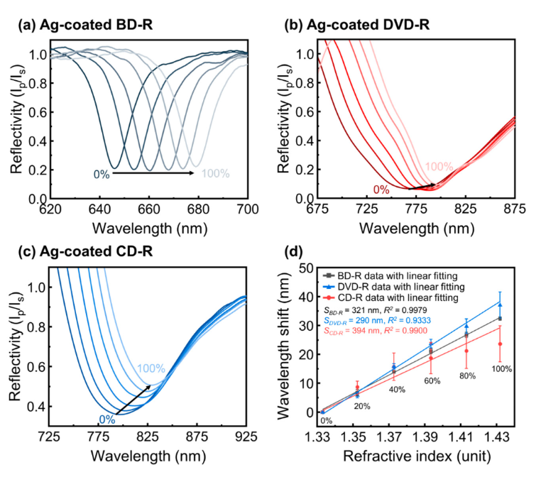
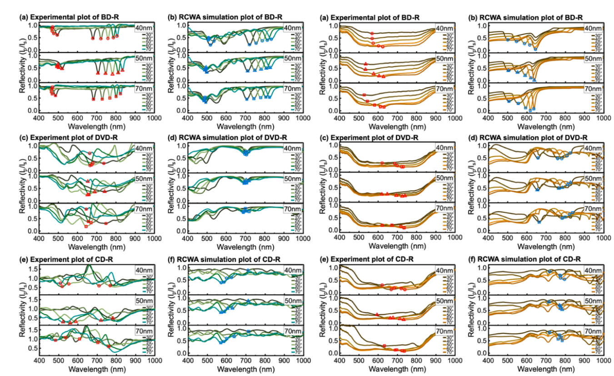
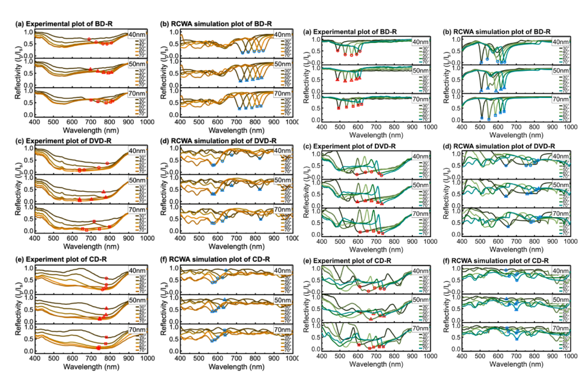
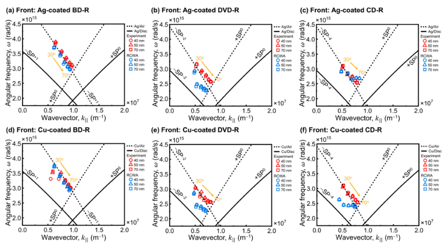
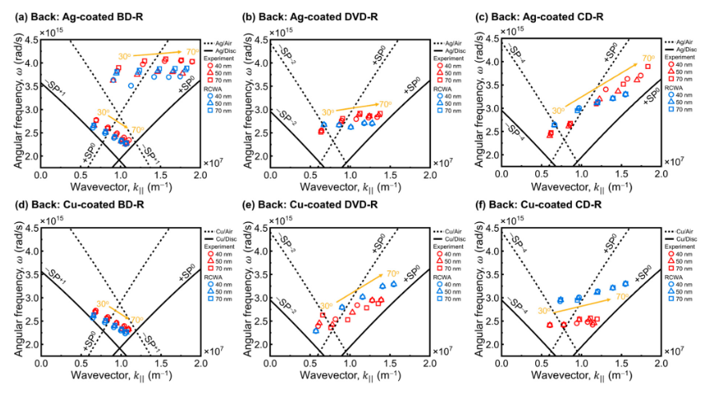
What the results mean
Sensitivity vs. resonance sharpness
A fundamental tradeoff exists: CD-R's large period produces broader resonances with larger wavelength shifts per RI unit (394 nm/RIU), while BD-R produces sharper, more reproducible resonances at 321 nm/RIU. For analytical applications, front-side Ag-coated BD-R represents the optimal balance.
Front-side illumination preferred
Back-side illumination causes geometric interference through the 1 mm polycarbonate substrate, weakening the field at the metal-dielectric interface. Only BD-R showed reasonable back-side performance. Front-side illumination is recommended for all disc-based GC-SPR applications.
Silver vs. copper
Silver's lower intrinsic optical loss produces cleaner resonances. Copper oxidizes in air, forming Cu₂O/CuO surface layers. Protective coatings (graphene, MoS₂) could stabilize Cu films in future work.
Real-world impact
One DiscSPR sensor costs under $10; a complete system costs ~$2,000 vs. $50,000–$150,000 for commercial GC-SPR. The Flint, Michigan lead crisis — affecting over 100,000 people — illustrates exactly the scenario where affordable, deployable sensing saves lives.
| Cost Metric | DiscSPR (this work) | Traditional GC-SPR |
|---|---|---|
| Grating substrate | <$1 (optical disc) | $100+ per chip |
| Materials per sensor unit | ~$4–7 | $200+ |
| Complete sensing system | ~$2,000 | $50,000–$150,000 |
Limitations
Copper stability: Cu oxidizes at room temperature. Protective layers (graphene, MoS₂, Al₂O₃) will be investigated. Molecular recognition not yet proven: this study establishes the plasmonic platform; lead-specific aptamers must be incorporated to quantify LOD and selectivity. Portability: current setup is benchtop-sized; a smartphone-coupled version could reduce cost below $50.
Next steps toward field deployment
Summary
This work demonstrates the first systematic study of optical discs as GC-SPR substrates, validated by RCWA simulations from AFM measurements. Key results: (1) optical discs support GC-SPR excitation without nanofabrication; (2) front-side Ag-coated BD-R gives sharpest resonances and 321 nm/RIU sensitivity with highest repeatability; (3) CD-R achieves highest sensitivity at 394 nm/RIU; (4) silver outperforms copper; (5) front-side illumination is preferred. Sensor material cost is under $10 per unit — over 99% cheaper than commercial GC-SPR. The problem is not in science but in availability and cost. DiscSPR demonstrates that optical disc SPR platforms can help solve this.